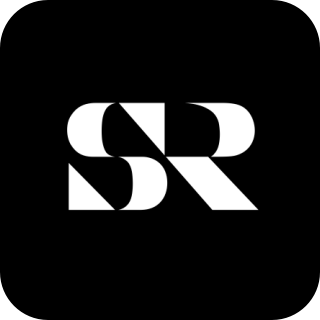
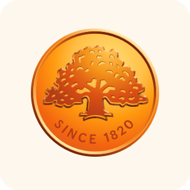
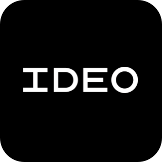
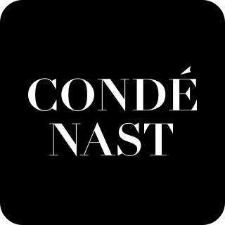
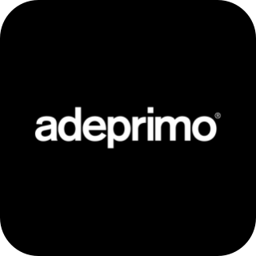
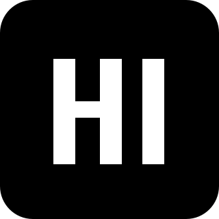
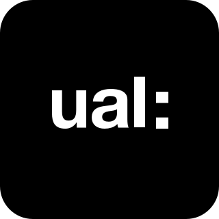

Resume
Work experience

Swedish Radio | Software engineer
Design system and Apple watch app.
Aug 2019 - Present

Swedbank | Design lead
Design research, UX and UI design, mentorship.
May 2017 - Jul 2019

IDEO | Interaction designer
Design thinking, design research, strategy, UX and UI design.
August 2014 - May 2016

Condé Nast | Interaction designer
Designed Wired.de. UX and UI design.
March 2014 - June 2014

Adeprimo | UX/UI designer
UX and UI design, service design, brand identity and art direction.
December 2010 - May 2014
Learning experience

Hyper Island | Design lead
UX and UI design. Brand and concept development. Design management and strategy. Group dynamics, self-leadership and facilitation.
August 2013 - August 2014

UAL - Central Saint Martins | Service design
Design thinking, observation, user journey mapping,
rapid prototyping and service blueprinting.
July 2013 - July 2013
Stanford | Human - computer interaction
Design research, rapid prototyping, UX design and heuristic evaluation.
September 2012 - November 2012
Berghs school of communication | Graphic design
Design methodology, idea and concept development, graphic design,
layout, typography and brand identity.
February 2012 - May 2012